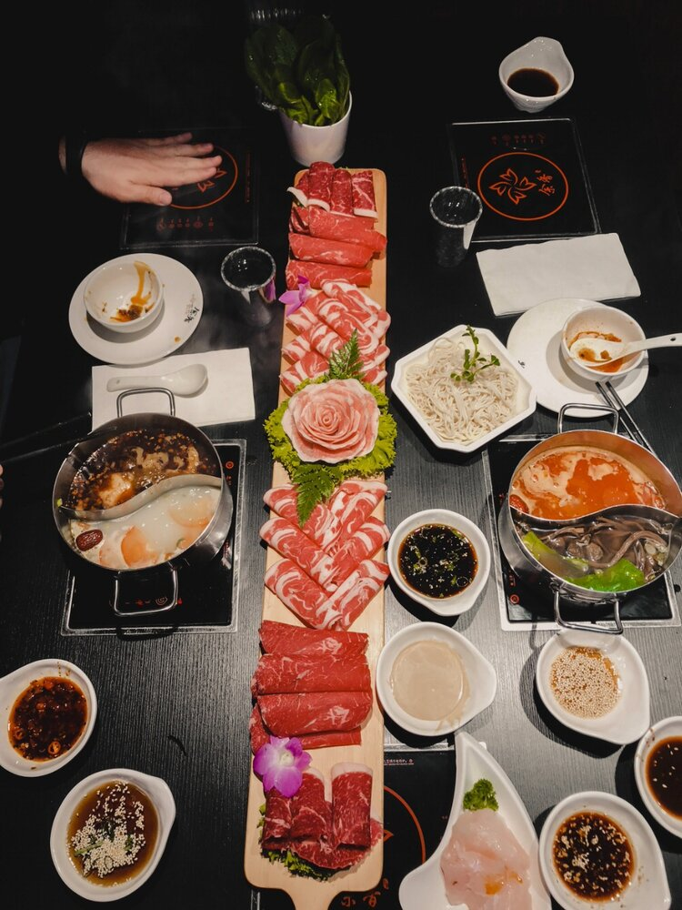
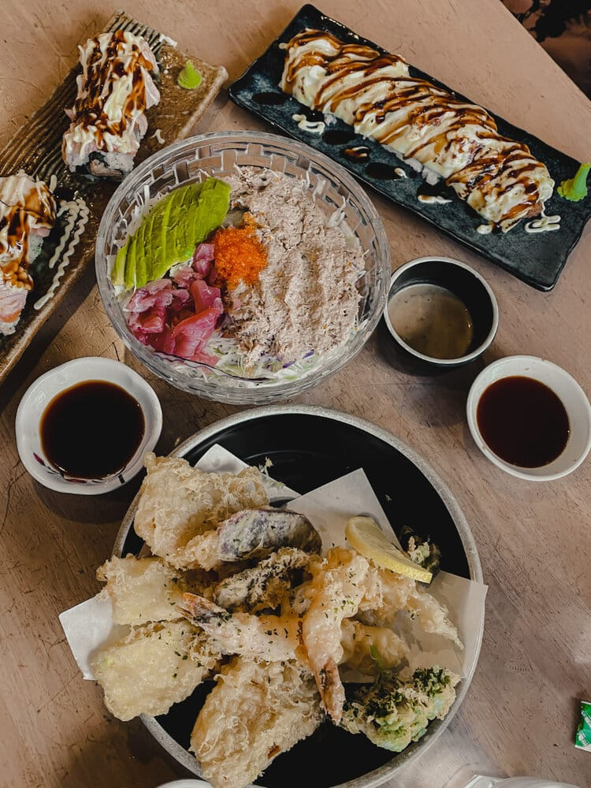

| 1.Sydney Royal Botanic Gardens : |
|
| These sprawling gardens are replete with greenery and flowers that will definitely allure your senses. This is a must-visit place for any nature enthusiast.Botanical garden or botanic garden[nb 1] is a garden dedicated to the collection, cultivation, preservation and display of an especially wide range of plants, which are typically labelled with their botanical names. It may contain specialist plant collections such as cacti and other succulent plants, herb gardens, plants from particular parts of the world, and so on; there may be greenhouses, shadehouses, again with special collections such as tropical plants, alpine plants, or other exotic plants. |
|
| 2.Museum of Contemporary Art Australia: |
| If you are an art lover, Museum of Contemporary Art should be a must-visit. It has the collection of the oldest artifacts from all over the world. The exhibitions held over here are always the next level and give you a glimpse of the rich history of Australia.The Museum of Contemporary Art Australia (MCA), located on George Street in Sydney's The Rocks neighbourhood, is solely dedicated to exhibiting, interpreting, and collecting contemporary art, from across Australia and around the world. It is the only contemporary art museum in Australia with a permanent collection.[4] The museum is housed in the Stripped Classical/Art Deco-styled[5] former Maritime Services Board Building on the western side of Circular Quay. A modern wing was added in 2012. |
|
| 3.Sydney Harbour Bridge: |
| The grand and beautiful Sydney Harbour Bridge has become an architectural symbol that is instinctively a signifier of not only Sydney but also Australia. It has been a quintessential icon of Sydney and an important part of the city’s landscape since 1932 and it is one of the finest places to visit in Sydney.
The construction of this iconic bridge took almost seven years, and it is made with 52,800 tons of steel. Since the shape and the angles of this bridge match that of a regular coat hanger, it is also known as coat hanger in the colloquial language. |
|
| 4.Port Stephens
|
| This Port is one of the greenest in the area because of the many plants and bushes that line the border. With the towering trees surrounding the water, you are able to swim, snorkel, or go kayaking in the waters here. On route make sure you stop off and tackle the Port Stephens Sandboarding excursion for a bit of adrenaline fuelled fun.Port Stephens Council is a local government area in the Hunter Region of New South Wales, Australia. The area is just north of Newcastle and is adjacent to the Pacific Highway which runs through Raymond Terrace, the largest town and Council seat. |
|
| 5.Hunter Valley : |
| If you love a good tipple or two then a trip to the Hunter Valley region is a must do during your stay in Sydney! With a huge range of award winning vineyards and breweries to explore jumping on a Hunter Valley day trip will help you make the most of this stunning area and sample some of the best wines and beers in Australia.The Hunter Valley, north of Sydney in New South Wales, is one of Australia's major wine regions, with a viticultural history dating back to the early 1800s. Known for varietals such as Semillon and Shiraz, it’s home to numerous wineries, including world-renowned brands and family-run boutique operations. Most are located south of the Hunter River and offer cellar door wine tastings and vineyard tours.
| |
| 1.Tan Viet
: |
| This Vietnamese restaurant is famous for its iconic noodle soup and crispy chicken that will blow your mind. The menu here is simple and the service is lightning fast, since most diners already know their order before they even step foot in the restaurant. The soup here is not your typical Vietnamese pho - it’s a more nourishing bone-broth full of goodness. And the crispy chicken is fried to perfection every time! |
 |
| 2.Knafeh: |
| The guys at Knafeh love theatrics, but it’s their sweet cheesy dessert that steals the show. For anyone not familiar with the Knafeh dessert, it’s a traditional Middle Eastern sweet made of baked cheese and breadcrumbs, drenched in sugar syrup - yum! The bearded bakers at Knafeh run as a pop up all over western Sydney, so check their social media to find where they’re baking at any given time. |
 |
| 3.Kanzo Sushi: |
|
There’s no shortage of Japanese restaurants in Sydney, but Kanzo is one of the best in the West. The sushi combinations served at Kanzo aren’t the typical Japanese offerings - think Aussie fusion, with lots of toppings and delicious sauces. It’s a busy lunchtime spot for workers in the local area, so be prepared for the lunch rush on weekdays |
 |
| 4.YX Mini Hot Pot: |
|
If you’re looking to get lost in another world, get yourself to YX Mini Hot Pot. This hot pot restaurant has been decorated to look like a scene out of a traditional Chinese fairytale, which definitely makes the dining experience feel special. Now for the food - each diner gets their own individual hot pot, and the ordering is all done electronically from the tablet on your table. I love how the meat is presented, especially the platter of roses! The food here is pricier than the usual hot pot joint, but the quality of your meal and the overall experience matches the price. |
|
| 5.Wagyu House KBBQ
: |
| This is the holy grail of all-you-can-eat Korean BBQs, and at around $35 a head you’ll be hard-pressed to find better value. Wagyu House has a huge selection of quality meats and they use wire grilling plates with charcoal, which gives your meat a great smoky flavour. It’s busy every night of the week, so come early if you want to avoid the lines! |
|
| 1.Explore The Botanical Gardens: |
| For visitors that want to see some of the natural wonders of the area and beyond, you can take a short trip to the Royal Botanical Garden. This stunning garden is located East of the business district, just a short walk along from the Opera House, and contains 74 acres of land filled with beautiful flowers, plants and wildlife too. Head around to Mrs Macquarie’s Chair for come incredible views – including that iconic shot of the harbour, Opera House and bridge.. |
|
| 2.Grab A Pic Of The Sydney Opera House: |
| One of the most beautiful structures in Sydney is undeniably the Opera House – which is the Australian icon all over the world! The sail-like structure is a must do for any Sydney itinerary and is free as long as you decide to take a tour of the exterior and not the interior! A great spot for sunset, the adjoining bars are the perfect spot for a cold beer or wine whilst soaking in the views. |
|
| 3.Stroll Around Darling Harbour: |
| Whilst you’re at the Opera House you can always extend your walk to take in Darling Harbour too. This vibrant part of the city if filled with amazing bars and restaurants so it’s the perfect stop of to refuel and soak in the city vibes!Darling Harbour is a harbour adjacent to the city centre of Sydney, New South Wales, Australia that is made up of a large recreational and pedestrian precinct that is situated on western outskirts of the Sydney central business district. |
|
| 4.Coogee to Bondi Beach Walk: |
|
The famous Bondi Beach offers amazing views of the coast and the Coogee to Bondi Beach Walk is a great addition to any stay in Sydney. The beach walk trail is a 3-km walkway that takes you along the coast of Bondi Beach all the way to Coogee – or you could also do it in reverse too!
A beautiful scenic walk, make sure you pencil in a few hours to complete it so you can stop off and enjoy many of the secluded bays along the way. |
 |